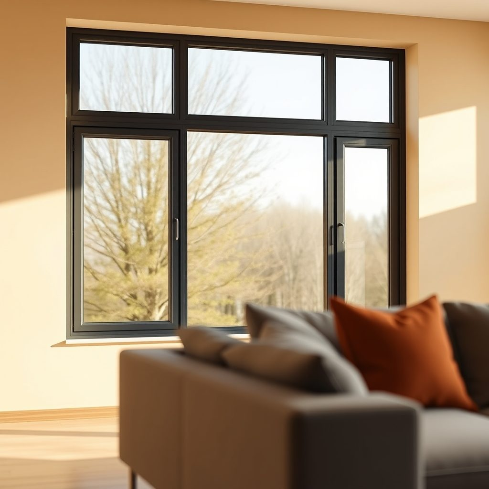
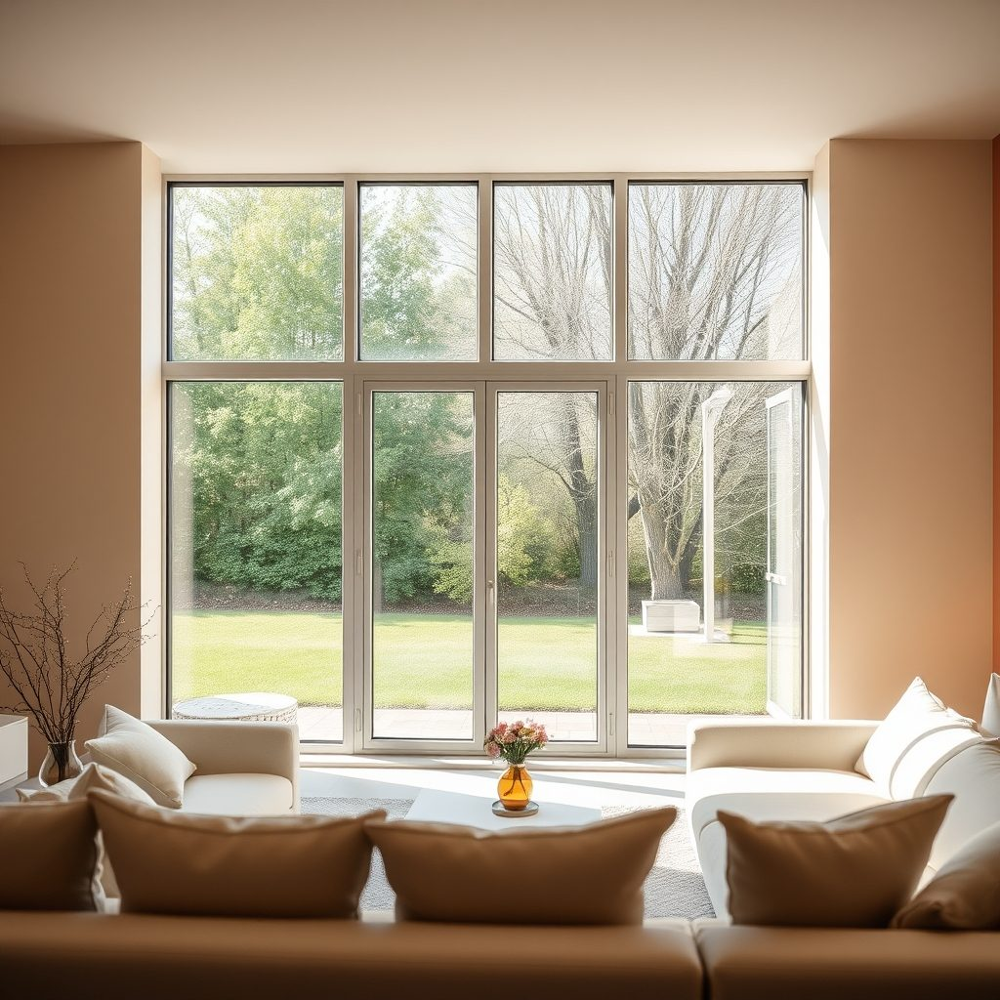
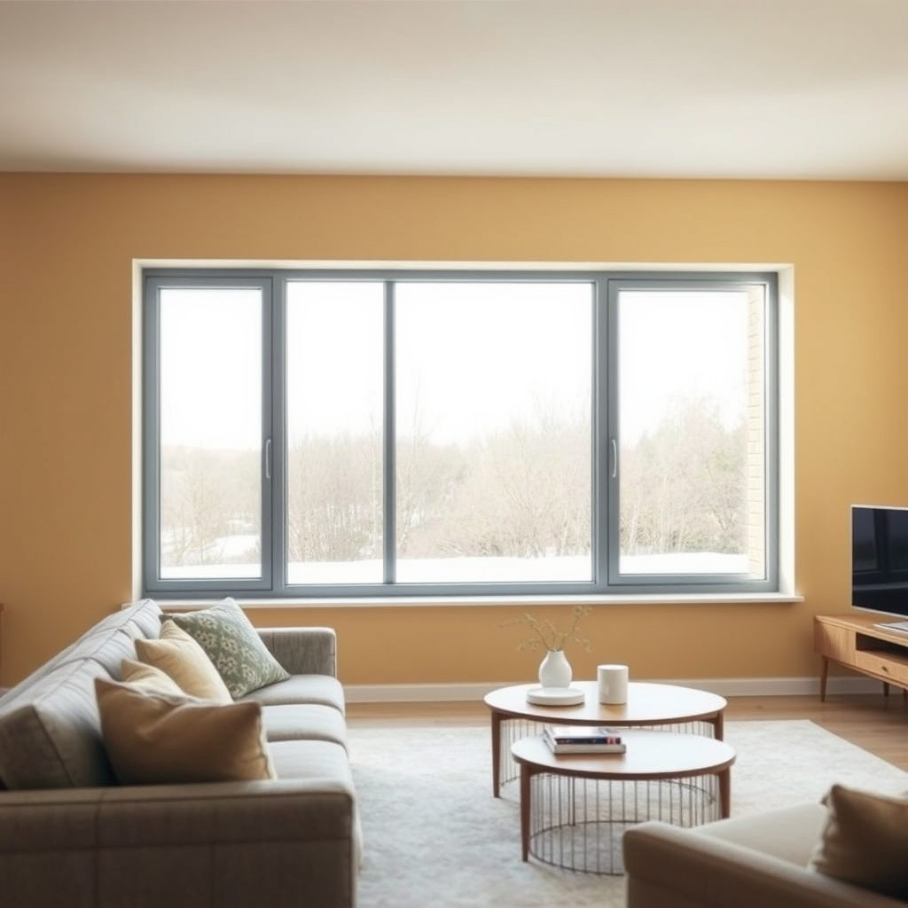

Профиль оконный в Юго-Восточном округе — что важно знать

Почему в Юго-Восточном округе Москвы при замене окон легко ошибиться? Чтобы понять, какой профиль оконный выбрать в Юго-Восточном округе — что важно знать, мастер советует смотреть не на рекламу, а на сборку и монтаж.
Итог
Итог всегда один: назвать следующий шаг заказчику — бесплатный замер, расчёт на месте и фиксированная цена в договоре.
Что важно знать про профиль оконный в Юго-Восточном округе?
Сравните два подхода. Первый — гнаться за цифрой 6. Второй — смотреть на весь узел. Шестикамерный профиль не волшебная таблетка. Если монтаж слабый, толку мало. В Москве зима холодная, ветер бывает. В Юго-Восточном округе дома разные: панель, кирпич, сталинка. Одной цифры мало. Важны ширина профиля, камеры, армирование, уплотнители, фурнитура, стеклопакет. И главное — установка. Частая ошибка: купить дешёвый шестикамерный профиль и сэкономить на монтаже. Потом дует, плачет конденсат, створка провисает. Второй вариант: взять нормальный профиль и нормальную бригаду. Сравните: экономия сейчас или тепло на годы. Мастер смотрит не на название, а на геометрию, толщину стенки, армирующий вкладыш. Если профиль тонкий, камеры не спасут. Если армирования нет, окно поведёт. Если уплотнитель жёсткий, будет продувать. Если фурнитура слабая, створка разболтается. Ещё момент: для больших окон нужен усиленный профиль. Для балконного блока — свой расчёт. Нельзя всем ставить одно и то же. В Юго-Восточном округе многие меняют окна в панельках. Там проёмы бывают неровные. Поэтому замер и монтаж решают. Ошибка — верить только слову «6 камер». Это как выбрать машину по числу дверей. Дверей может быть пять, а едет плохо. Так и тут. Смотрите на сборку, крепёж, швы, откосы. Спросите, чем армируют, как крепят, как запенивают. Сравнение простое: хороший профиль плюс плохой монтаж — плохой результат. Средний профиль плюс хороший монтаж — часто лучше. Но лучше и то, и то. Делаем качественно — значит без спешки и без сказок.
Почему шесть камер не гарантируют тепло?
Смотрите на профиль в разрезе, а не на картинку. Шесть камер — это плюс, но не спасение. Важна монтажная глубина. Для Москвы лучше не совсем тонкий профиль. Спросите про армирование. Оно должно быть замкнутое, толстое, не фольга. Уплотнители должны быть мягкими, эластичными. Фурнитура — чтобы ручка не болталась, створка не тёрла. Стеклопакет — отдельная тема. Двухкамерный обычно ок, но для шумной стороны лучше толще. Сравните два окна. Одно: дешёвый шестикамерный профиль, тонкая стенка, слабое армирование, быстрый монтаж. Другое: нормальный профиль, честное армирование, аккуратные швы. Через год первое может дуть, скрипеть, потеть. Второе чаще стоит спокойно. Ошибка покупателя — экономить на замере и монтаже. Замерщик должен смотреть откосы, четверть, неровности. Монтажник — крепить по уровню, запенивать без пустот, ставить пароизоляцию. Если этого нет, шестикамерный профиль не спасёт. В Юго-Восточном округе много домов с разными проёмами. Где-то нужен добор, где-то усиление. Не бывает одного рецепта. Сравнение по цене ничего не даёт, если не сравнить состав работ. Спросите: что входит? Демонтаж, вывоз, откосы, подоконник, отливы? Как крепят? Чем герметизируют? Есть ли гарантия на монтаж? Мастер скажет: профиль выбирают по задаче. На юг — солнце, на север — холод. В шумный двор — стеклопакет. В панельку — аккуратный монтаж. Делаем качественно — это когда окно работает, а не просто цифра в договоре.
Шесть камер — это всегда теплее?
Не всегда: тепло зависит от профиля, стеклопакета, монтажа и вентиляции. Если дом сырой или монтаж плохой, лишние камеры не помогут. Вывод простой — смотрите на сборку и установку, а не только на цифру 6.
Бесплатный замер
Оставьте заявку на бесплатный замер: приедем в удобное время, посчитаем на месте и зафиксируем цену в договоре.
Призыв
Оконный профиль отзывы в Юго-Восточном округе: что выбратьСосед из Юго-Восточного округа спрашивает: «Оконный профиль, отзывы — что выбрать?» В Москве, особенно в Юго-Восточном округе, окна меняют часто, а качествен…
Оконный профиль рехау в Юго-Восточном округе — что важно знатьЧитатель спрашивает: оконный профиль рехау в Юго-Восточном округе — что важно знать, если меняю окна в панельке? Мы ставим окна в этом округе и делаем качест…